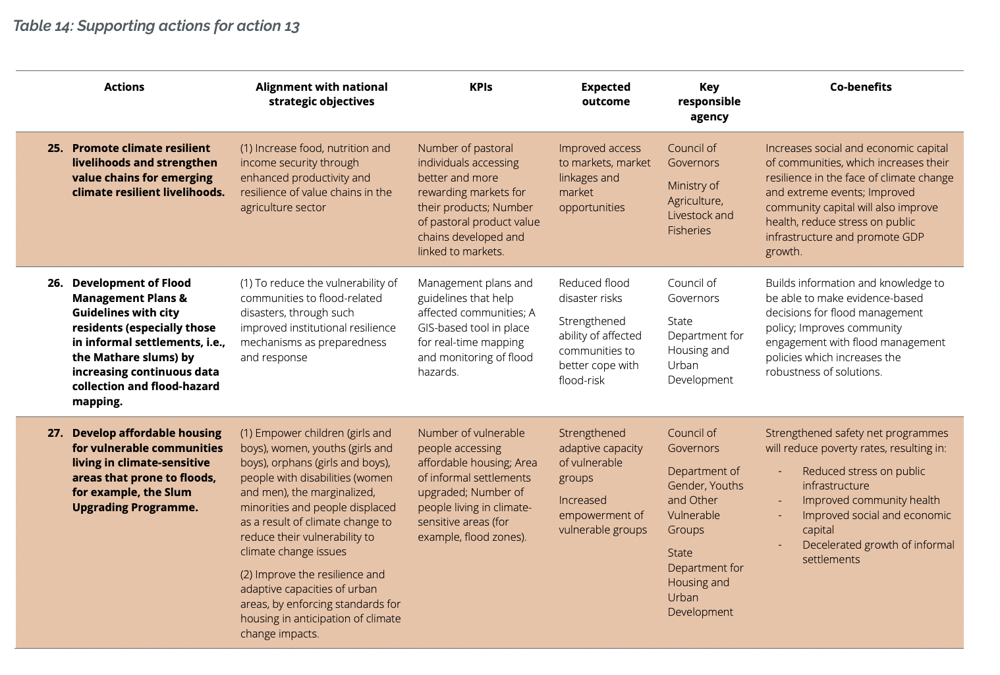

Policy
Summary
Sustainable Development Goals
UN SDG11: Make cities and human settlements inclusive, safe, resilient and sustainable
Target 11.1: By 2030, ensure access for all to adequate, safe and affordable housing and basic services and upgrade slums.
Nairobi Climate Action Plan 2020-2050
- Until the Covid-19 pandemic, Nairobi was one of the fastest growing economies in Africa with annual average growth of 5.9% between 2010 - 2018 (USAid, nd), GDP worth $36 billion (C40, nd)
- 2/3 of Kenyans continues to live in poverty, making less than £3.2 per day
- 70% Kenyan families are chronically vulnerable to food and nutrition insecurity and preventable diseases.
- 75% of Nairobi is informal settlements, with predicted number of urban population living in slums to double in the next 15 years.
- Informal settlements only cover 5% of total residential land of the city. (UN Habitat, 2005)
- This city is extremely vulnerable against impact of the climate crisis— haltering food security, reduce access to clean water, exposure to extreme heat.
- Nairobi has set out 15 climate resilience action to strength the city against extreme weather, of which pertained very little detail onto how laid actions would be implemented.
FOCUS Action 13: increase access to climate resilience programme.

- Question on ******how****** the city of Nairobi aims to move towards such goals is unclear from this document.
- The only mention of geospatial technology (GIS, satellite imagery) is briefly mentioned once, where the government acknowledge the lack of GIS technology to further enable an accessible and wide-spread urban transit system.
- This shows the Nairobi government has a little idea onto how to harness Earth Observation data to push forward their urban climate agenda.
- Build houses in climate sensitive areas?????
- Slum mapping — see where slums will expand and provide amenities accordingly.
Application
Increase access to climate resilience programme — Identify arid land/flood zones, disaster mapping.
- Slum identification — see where slums will expand and provide amenities accordingly.
- https://www.mdpi.com/2072-4292/8/6/455